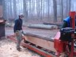
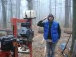
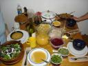
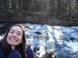

the return home
January 18th, 2007 by BenjaminWith Sirius being the last community on the tour, I’ve started my journey home. There are plenty of friends lining my path. This is the part of the movie where the bad guys have been vanquised, so all the helpers come out of nowhere and they all have a big party while cheesy 80’s music plays.
12/1 - Friday
I came into Duxbury (near Boston) today to see Carmen, a friend from my visitor group at Twin Oaks. We saw some giant phallus-shaped monument with a pilgrim on the top, then went to the beach! I hadn’t seen the Atlantic yet on the trip, so I’m glad that I found that completion. I would have been disappointed otherwise. Now I can say I went from coast to coast! We had yummy sushi for dinner, and I bought some rum. Carmen fell asleep at 9 (she says lately, she’s been going to bed at noon).
12/5 - Tuesday
Went through New York city again. Patrick (old friend from pre-TAMS high school, St. Mark’s) was in town this time, so I stayed with him. We talked about video games a lot (ah, just like the old days). We went to see Casino Royale (my first NY movie!). Patrick had some work to do, so I hung out with Tavit again. I really love the Nintendo Wii. Besides being immaculately designed, it really brings people together. After playing Wii sports for a while, we went out to a park near his apartment and played 4-square! A simple game, but super fun. Later, I had a drink with Taylor (TAMS friend). He’s working for Snohetta, an architectural firm from Norway. It was interesting hearing him describe the different social/cultural awareness that a Norweigan company provides - a more egalitarian, social(ist) mentality.
12/7 - Thursday
Twin Oaks is great. People all over have been glad to see me. Everyone asks if I live here now, or when I’m moving in for good. So much love here for me. It’s hard to resist. The commune changes the social scene as well - different from Earthaven, where everyone is focused on doing their own thing most of the time, and then come together for the sake of the community. At the commune, all the business is already taken care of, so you just have to plug in.
I’m staying with Callista; it’s been nice to see her again. She has a very healthy outlook on life and has “the right level of seriousness” (e.g. “extreme farting”). Just a very cool person. I definitely want to keep in touch with her.
12/9 - Saturday
Earthaven was very cool - I walked up just as Kelly and Peggy (two A&A helpers that I worked with before) were leaving - they were not expecting me. Patricia, the “mother” of the house, whom I had contacted, has been really busy and didn’t forward my message, and they didn’t get my phone messages in time. No biggie. I was welcomed anyway. We went to a Granola Funk Explosion show in Asheville - it started later than we thought, so we had sushi beforehand. The show was ok - had a cool vibe for a bunch of white guys - smart lyrics. I talked with Farmer again about open-source mythology and got some of his writing. I left him Doug Rushkoff’s Renaissance Prospects speech on cd.
I had been planning to stay with Mark Saturday night, since he expressed interest in seeing me again, but he wasn’t returning any of my phone calls, so I stayed at a motel. Oh well.
12/12 - Tuesday
April’s place was good. I met a friend of hers named Raven who is goth and into Shamanism. I feel like I’m being pulled more towards Shamanism lately - it keeps coming up, and I keep meeting people along the way to be my little guides. I asked Raven about it and he urged me to focus on awareness, presence, and then seeing the connections around me - something like that.
I had a good conversation with April about our relationship. We were both drunk, which helped a lot, I’m sure. She said she was looking for closure on the relationship so that she could move on into friendship.
We made delicious soup - black-eyed peas with tomatoes, spinach, etc. We watched some Firefly, like the good old days, and ate popcorn with nutritional yeast flakes. yummy!
12/14 - Thursday
Karen Jean’s was also fun. But oh my god the food. Two days at Karen Jean’s makes up for weeks of wholesome organic cooking. It was “good southern food.” We had meatloaf, carrots swimming in butter, and baked potatoes with all the fixins. The “highlight” of the foods that I consumed was a butterfinger pie - butterfinger candybar with whipped cream and cream cheese. Good thing I don’t eat like that very often!
I helped Karen Jean get her Christmas lights set up in front of her house [youtube video].
12/15 - Friday
And now I’m home! well, back to the childhood home. I had lunch with my dad (got my tex-mex fix out of the way), told him briefly about the trip - a few summarizing thoughts, brief future plans. Got some car stuff taken care of and chilled at mom’s house for the rest of the day. I’m looking forward to some rest over the holidays!
Sirius Community - journal entries
January 18th, 2007 by Benjamin11/26 - Sunday night
Found Sirius ok. It’s about 10 miles from Amherst, MA. The place is pretty big - several buildings. Brice met me, showed me to my room and gave me a quick orientation. Then he invited me to have dinner with his family. He and his wife Deborah have three kids at the community and two in their twenties who have moved out, but still live nearby.
Sirius has much more of a focus on spirituality (but not religion) - centered around raising consciousness. The Community Center building where I’m staying also houses a large meeting room and the kitchen and dining areas. It is absolutely gorgeous. Hardwood everywhere - posts, doors, floors, you name it.
11/27 - Monday afternoon
Things have started out very slow here. Sunday and Monday are Sirius’ days off (they work Saturday instead of Monday), so everyone seems to be in chill-out-alone mode. I haven’t seen many people around today. There’s a community dinner tonight (as well as Tuesday, Thursday and Friday), so I should be able to meet more people then. There’s also a community meeting Thursday night which I’m hoping to attend. In the meantime, I’ve been reading.
11/28 - Tuesday before dinner
So there was no community dinner last night. The kitchen was still dark at 6:00, so I started poking around. I met Will outside, who was finishing work on a cob oven. I helped him put the chimney on top and he invited me to dinner with him in town. Amherst is a college town. With three colleges in the area, there are over 40,000 students. Will showed me around the main drag and then we had a burrito.
I met Bruce yesterday, who indicated that there might be some work for me to help with. I put in 4 hours this morning, then we had a delicious lunch, prepared by Bruce’s wife, Lynda (sp?). Squash-curry soup and tempeh (sandwiches). Put in another 3.5 hours after lunch, but it started getting dark around 4:30, so that’s when we wound down. In the morning we picked up some logs from nearby and brought them back to Sirius to mill, but unfortunately the saw mill was out of gas, so Ernesto and I started sawing logs (with a tractor-attached saw) for firewood. We continued that into the afternoon as well, and finally did some log splitting (axe-style) at the end of the day. A good day’s work. I hear we are actually supposed to have community dinner tonight, and I hear sounds coming from the kitchen, so it’s a good bet. Ernesto is working with several non-profits to increase justice in South America. He’s interested in setting up a wiki and invited me over tonight after dinner to talk about it.
After dinner -
Dinner was nice - lentil soup and salad - though not as good as lunch, and not as good as any meal at Twin Oaks. Man, I miss that food. I talked with some neighbors of the community - Dagan and Brian (who cooked - the cooking rota is open to anyone in the neighborhood, creating a sort of extended community. Mostly I talked about the communities I’ve been to. Everyone knows most of the ones I went to - the big ones. I’m starting to see connections in the tech scene in community as well. The guy from Sligo (DC) works on a side-project which is hosted by Gaiahost - run by Charles here at Sirius. Ernesto (Sirius member) is also working on a project hosted by them (ildes.org). He tells me they’re hiring. Must investigate. This makes three tech companies (Skyhouse consulting, Sligo, Gaiahost) that i know of in or related to community - and twin oaks software will be starting up soon too. I whipped up an interactive map of South America for Ernesto’s website. Now to read and sleep!
11/29 - Wednesday
Worked with Ernesto and Bruce again - milling logs this time. It was actually pretty fun, and I feel like I learned a new skill. After dinner (just leftovers I prepared myself), I went with Ernesto to his ILDES meeting - an activist group (about half students?) meeting at Hampshire college. It’s an organization based on encouraging and coordinating existing efforts around social justice, sustainable/ecological living, permaculture, grassroots empowerment, etc. - positive altertatives to all the BS that people are protesting against in Latin America. It was great to be back around that activist energy again. I realized that I’ve missed it a bit. At the same time, it reminded me a lot of the Ishmael group sitting around talking and talking and not actually doing anything. But then, that’s why I’m out here.
11/30 - Thursday
I worked in the garden in the morning - mulching beds for the coming winter, then did some more website work for ILDES in the afternoon. The community dinner tonight was veggie gumbo, salad and baked butternut squash. After dinner was the weekly community meeting. It was a special meeting because Ernesto is leaving, so after announcements and meditation he showed the film “The Secret.” It’s all about the power of attraction and how to manifest things in your life. I thought the dramatic parts were way-over-dramatized, and the speakers were corny and salesman-like. Content-wise, it was interesting, but I thought What the Bleep Do We Know presented similar information in a much more palatable format.
Pictures
An example of the beautiful hardwood they have all over the Community Center

I milled logs with Bruce (left) and Ernesto)  
This fine tool is called a Peavey (named after the guy that invented it). It’s used for turning logs. BEHOLD THE POWER OF LEVERS!


NY journals & pics
January 18th, 2007 by BenjaminAfter leaving DC, I headed up to New York for a few days to see friends and visit Ganas on Staten Island.
11/15 - Wednesday
Arrived in NY okay. It must have cost me $20 in tolls to get up here. $5 for a bridge, $3 for a turnpike. Ridiculous. Hung out with Tavit. He’s into video games and tech, so we sat around drinking beer and smoking and shot the shit.
11/17 - Friday
Visited Ganas - the community on Staten Island. They have open dinners on Friday nights - a community meal followed by questions to/from visitors about the community. The food was great. I was the only visitor so I got to ask plenty of questions. Lots of people were interested in my travels and wanted to hear comparisons of other communities. They have about 10 houses on the same block, so they share a common backyard area. They have three businesses nearby - a thrift store, refurbished furniture, and an art gallery. Some people just rent a room, others work in one of the businesses, and there is a small group of “hard-core” folk who are more dedicated to the community. After dinner and the Q&A, I sat in on one of their feedback-learning sessions. The subject had requested the session to help her deal with some relationship issues that she was dealing with. She talked and the others in the group relayed back their impressions of what she said, trying to dig into her motivations and help her more consciously realize what she was feeling and why. During the Q&A, one of the members mentioned that communities tend to focus on either a “communication” (or personal growth) aspect, or on physical systems of sustainability (permaculture, renewable energy, etc).
11/18 - Saturday
Met up w/ Shawna. We were going to have dim sum so we headed to Chinatown. We ended up wandering around too long and ended up just picking a place in little Italy for dinner.
Tavit was DJ-ing a house party in Brooklyn and invited me to go along with him, his roommate, and a small entourage of friends. The party was off the hook. I must admit, I had higher expectations - going to my first big NEW YORK party - but it was more like a regular house party in Austin, only happened to be in NY. It was the last night of a play, and this was a show-closing cast party - filled, of course - with theater people. I think the highlight of the evening was that I got to dance with the hottest woman at the party - and immediately afterward, she introduced me to her boyfriend! If I hadn’t been so intoxicated, I might have considered a three-way (not that they were hinting that at all); oh well. Tavit spun some cool music off of his laptop. There was lots of dancing. I took my first NYC cab ride on the way home - we got a black car for $45 - 6 of us piled into the one car. It was a fast ride. We said goodbye on the street at 5:45 am. So now it’s Sunday morning and the Nintendo Wii comes out in like 4 hours. Tavit talked about just staying up and going for the gold, but I had to crash out.
11/20 - Monday
Arrived upstate at Susannah’s yesterday - no problem getting here. We hung out a bit and she oriented me to her house/dorm. It’s technically a dormitory, under the school’s jurisdiction, but it’s a 6-bedroom house. One of the rooms is empty - the double - where I’m staying. My sister lives upstairs with two other girls (separate bedrooms) and two girls named Lilly live downstairs. They have their own laundry facilities here (coin-op) and a full kitchen. The school takes care of bathroom supplies, some basic house cleaning, utilities including ethernet internet. Not bad for a “dorm.” I bought groceries and made cookies this morning. I’m spending my time watching movies and working on personal projects - typing up journal entries, programming projects, planning the return trip to Texas, etc.
Pinktures!
The amazingly talented Andrew Schnieder grinds one out. I saw this guy put together an entire song in 15 minutes with nothing but his guitar and a bunch of pedals (including a sampler panel). And then he did it again. And again.

Friends from TAMS: Val, Shawna and Thomas.

Thanksgiving dinner included apple-squash soup, pumpkin gnocci & sauce, salad, green bean casserole, spinach, stuffing, and more! Afterwards, we got a tour of Bard’s beautiful campus.  


I’m a sucker for sunsets.


NomadicScribe and nambers: universal shift or serendipity?
January 3rd, 2007 by BenjaminNambers is a way to map an internet address into a series of four (unchosen words. It’s based on the website’s IP address, which is a series of four numbers between 0 - 255. The nambers website assigns a single word to each number (0-255), for example 64 is ‘drive,’ 233 is ‘tool,’ etc. So to translate a website into nambers, it looks up the IP address and translates each number into the corresponding word. For example, Google’s IP address is 64.233.167.99, which translates to drive tool patch go.
In nambers, nomadicscribe.net is: drive heart head happy. Could it be any more perfect?
One Year on the Road
January 3rd, 2007 by BenjaminI’ve put together a soundtrack for my travels this year. You can see the full playlist and the picture I chose as “cover art” at Art of the Mix.
New Artists I discovered this year:
- Michael Franti and Spearhead - groovy, dance-able hip-hop beats combined with conscious lyrics
- Human and the Other Humans - funky/folky sound with lyrics about community life and fighting the man. A fellow communard, I got the chance to see him play live at Earthaven Ecovillage when he was on tour.
- Alabama-3 (A3) - techno + gospel + country + blues = an amazing combination of musical talents
If you’d like me to burn you a copy, e-mail me your address.
DC - journal and pictures
December 11th, 2006 by Benjamin11/10 - Friday
Fuck. Talk about another extreme [coming from a week alone in the woods]. DC reminds me of a combination of NYC and LA. Streets and cars everywhere and sprawling out to everywhere else. This place makes me want to smoke.
Everything this morning went fine. The drive out of Shenandoah National Park was long and leisurely. Great views from the tops of the mountains. At some point in the past couple days, I had a craving for hot and sour soup - when I got up this morning I was thinking how nice it would be to find a chinese buffet for lunch. Bingo! Manifested. Done. I got my hot and sour and two platefulls of non-vegetarian, non-organic deliciousness. Right off of the road I was on, didn’t even have to look for it. I got in touch with Ethan - he said it’s cool if I come in tonight. He gets off at six and bikes home, so he’ll be here in about an hour and a half. Instead of driving around lost, I decided to just park in front of his house and soak in some of the city. It’s across from a school, which is nice, but it feels like at least some of the neighbors are going through hard times. Still, people wave when they pass me or vice-versa.
night - We had Etheopian for dinner - an experience I haven’t had in many years. It was delicious and more filling than I had expected. We shared some exquisite beers and talked about all manner of thngs - Ethan has a great library including personal classics like Ishmael and Jensen’s stuff and other geekery like G.E.B. or a book by the Long Now Foundation, and other stuff on my reading list or my bookshelf. We shared some music, then I balanced my budget (still roughly on track) and read my LJ friends’ page. I talked to Carl earlier for a while which was good. I wonder how close we’ll stay over the coming years- I feel like we’re on similar paths sometimes but.. hard to describe. Want to call people tomorrow and catch up.. nice to have some down time to just crash and hang out. there’ll be plenty of time for DC…
We had two or three awesome beers tonight but the only one I can remember the name of is Troegenator Double Bock.
11/11 - Saturday
I made hummus & (quinoa) tabouli for dinner. Our awesome beer was a Belgian sampler pack including Piraat Ale, Bornem double and triple brews, Augustijn, Bruegel and Gulden Draak. We were both pretty smashed by the end and ended up falling asleep on the futon in the living room. We cuddled a bit in the night, which was a nice exercise of the platonic-male-cuddling ideal.
11/12 - Sunday
Watched some “protest porn” from Crimethinc. I want it to be successful, but really it’s just frustrating. It’s just not a fulcrum at all. We should be aiming way higher up. We went to the American Indian Museum, which I thought was beautifully put together. The section on “where are they now?” which covers how modern native tribes are struggling to maintain their cultural identities through ceremonies and revivals was bitterly depressing to me. The thought of having one’s culture so totally destroyed is devastating. The museum as a whole lacked an admittance of slaughter/holocaust, which I think is necessary to do the native peoples of this country justice.
We had Etheopian again for dinner and went by the Infoshop - a little book store/zine library/anarchist hangout. I saw a post there for a worker-owned coop doing web programming named Sligo.
Our awesome beers for the evening included Westmalle and Trois Pistoles.
11/13 - Monday
I went down to the mall today and did a bunch of touristy stuff. Walked along the Mall quite a bit. Checked out some modern art at the Hirschhorn. Saw the major points - stone phallus Washington memorial, WW2 memorial, reflecting pool, Lincoln memorial. I went by the National Archives to see the constitution, mainly because I’m interested in it’s creation. I think it’s a brilliant piece of design and would love to know what sort of debates the framers had when putting it together. Daniel said that there was a book containing the notes of the Continental Congress, but I couldn’t find it in the gift shop.
When I got back to Ethan’s neighborhood, I found that one of my car’s windows had been smashed. When I parked there a few days earlier, Ethan had warned me to take everything out of sight because that sort of thing happens, but this was the last day and it was the middle of the day - between noon and 5pm! Luckily (for rain) it was the smallest window (one of the triangle ones at the back), and after looking through everything, they didn’t really take anything important. They left my checkbooks, credit cards, etc. and only took (as far as I can tell) a pocket knife. I figure it was probably just some bored kids - obviously not anyone with a criminal intent. I was more bewildered than scared or angry, and asked Ethan what sort of lesson I was supposed to learn from this. His Zen wisdom was: “Possessions cause suffering.” Only if you get attached to them, I guess.
I drove down to Alexandria to stay with my friend Chris. We had dinner at a Tapas bar and drank and talked.
11/14 - Tuesday
I slept in till 11:00 - wow. Chris and I went to the spy museum, which was fun enough but I would have liked to have seen more info about recent progress in spy techniques and technology. We had more great beer at lunch (although we had to pay for it this time) and had dinner at the Lost Dog cafe - where some portion (all?) of the profits go to a shelter for - you guessed it - lost dogs.
Pictures!!!!
camping pictures
November 25th, 2006 by BenjaminA typical campsite setup:

My deer friend from the last day:

A panoramic view stitched together from several pics:

A view from the mountains:

More:

Camping-style Benjamin:

Me at the end of the week:

six days of camping in the woods - journal excerpts
November 25th, 2006 by BenjaminI brought Tom Brown Jr.’s Field Guide to Nature Observation and Tracking with me, and it was the perfect companion.
11/4 - Saturday night
I write by moonlight. (Hope the ink in my pens doesn’t freeze - another advantage of pencils.) So different from last night - a mattress in a warm house with a warm body sleeping next to mine - and now here I am, alone, outside in the cold. The cold makes it a lot harder. The combination is worse. It is supposed to start warming up in a couple of days. I hung the hammock with rope. I hope they hold it up. I wonder how long I’ll make it.
11/5 - Sunday 8:30am
Survived the night! Water bottle is not frozen through. Thermometer says 34 degrees (up from 33 last night). My hammock did not bottom out and while some parts got chilly (toes, sometimes knees or back), I was warm enough for sleep. When the wind blew last night, the falling leaves sounded like a light rain or a small creature(s) crawling around.
10:53am - up to 41°F. I did an awareness exercise this morning - sit in 1 place, close your eyes, concentrate on smell - smell everything you can in front, left, right, behind, above, below you. Now concentrate on hearing, then touch. After I finished the exercise, I was just sitting quietly and heard leaves like slow footsteps behind me. I turned and saw a deer looking at me. I turned my whole body and kept quiet and watched her and her foal slowly poke their way through the underbrush.
It does feel lonely out here - I’m reminded of my attraction to/need for people. I can’t shake the feeling that I’m waiting. I really want this to be an experience in itself and not just “surviving in the woods” for 6 days. There’s so much to do and see in Shenandoah, there’s a big temptation to say fuck it and just do all that - but that feels like nature tourism to me, and I want more than that.
(afternoon ~ 4ish) - My diet today has consisted of: an apple, a granola bar, a can of tuna, a can of “Santa Fe style” corn black beans & tomatoes, some raisin & nut trail mix, some carrots and some chocolate (surprisingly high in fiber). I went up to Hawksbill Summit (4050′ elevation) to practice my awareness - which didn’t really happen. It was absolutely breathtaking. Way better than even the grand canyon. I still feel bored occasionally - it’s so hard to quit fidgeting & just be. I feel like I should be doing something.
11/6 - Monday
Got up at 7:55 this morning. 43° it said. I was plenty warm last night and I slept fairly well. I’ll pack up and head to the next site in a little bit. I think it’s 2-3 miles.
(almost 4pm) - 58°. It’s warm today. I took off both my sweaters and my long johns by the time I finished hiking today. It was pretty and not too long. At one point I had to cross the road. It felt like an unwanted intrusion - “What the fuck are these cars and this concrete doing here? I’m here for nature. This is what I’ve been trying to avoid.” Second campsite is fucking brilliant. The wind blows through the trees constantly - hopefully it won’t be too bad at night. Changed clothes today (T-shirt, underwear, socks) - just for fun. I probably brought too many pairs of socks, and I’m thinking maybe too much food - but better safe than sorry.
3:56pm - I went down to the river to get water - on my way back to camp, I saw a stag - with antlers!
11/7 - Tuesday - half way through
So the grey from this morning turned into rain. Seems like it’s been raining for hours. I’m hiding out in my hammock under the tarp, listening to the natural orchestra and letting my mind wander.
(later) It has rained all damned day long! It does feel a bit like an endurance test out here. I keep thinking of excuses to “turn in” and head back to civilization “early.” Tom Brown talks about putting yourself in uncomfortable situations because of the discomfort, to broaden one’s range of experience - I think it’s difficult for me here because there’s also a dimension of safety I’m playing with - alone, all my supplies with me, etc. I miss people. I feel like going from Twin Oaks to anywhere would be a let down, but to come here and do this - it’s the other extreme. I feel like I’m not as dirty as I thought I’d be. I guess being a hippie was good practice. I’ll also be glad to get away from chlorinated water - feels like I’m drinking from a pool all the time.
11/8 - Wed 7:40am. 52° …. AND ALL FUCKING NIGHT LONG! The rain actually picked up more. Everything under my hammock got wet (shoes, pack, TP) despite my efforts, but fortunately my sleeping bag and my self stayed relatively dry. It’s still sprinkling a bit, but I can’t tell how much is drips from the trees. One thing I’ve noticed is that my allergies are almost completely gone out here. My nose runs a bit when it’s wet, but that’s about it.
2:20pm - 56° - It rained on and off all morning. I was able to get packed up without getting the important stuff wet. It rained during most of the (longer than I expected) hike over here to my third and final campsite. At least twice, I stopped for a rest/snack and noticed deer browsing nearby. They seemed interested instead of scared. It’s not like having one eat from my hand or anything, but I think it’s progress. The sun has finally poked its head out of the clouds and I hope it sticks around. I took a horse trail to get here. From the map, I knew it crossed a couple of streams and, silly me, I was expecting some nice man-made bridge for the horseys to cross on. Wrong! The first one was the worst - only about six feet across, but down to a foot and a half deep in a couple places - with enough water rushing past to knock me on my ass if I wasn’t careful. I did it the sensible way - dropped everything I was carrying, took off my shoes and socks, and waded across using my hands on the rocks for support.. Dropped my pack on the other side then went back for the rest.
5:00pm - 50° - It’s all grey and misty again. Something about being cold and wet makes me want to be somewhere else. I want to try this transcending-the-self, become-one-with-nature stuff that Tom Brown talks about, but it’s difficult to maintain the intention when I’m distracted by not wanting to be here. I feel like the timing of this trip could have been better. But still, it’s been good in a way: now I know that I can do it.
11/9 8:56am - 46°. Last full day in the woods (for now). The first thing I noticed when I woke up this morning was the sound of the wind without rain splatters to accompany it. The second thing I noticed was the sun - shining straight into one end of my tarp! Oh frabjous day!
(later) I just realized I haven’t been inside a building for 5 days. I haven’t even seen another person in over 48 hours - tomorrow morning will be 72. I can still hear the road though. I’m still looking forward to DC, etc. but — I think it was yesterday — I started appreciating this - life without distractions - and feeling like I could keep doing it for as long as I need to. Sleep. Eat. Poop. Be.
4:42 - 56°. I went out for a walk on the trail to test my “fox walk” and actually saw a wild bear! yipee! It was only a small one, and as soon as I took another step, it bolted off into the woods away from me, but still, I feel like the trip is complete. On the way back in, I saw a young buck off one side of the trail - he didn’t even stop, I don’t think he even saw me. and when I got back to camp, there was a baby deer grazing about 30 yards from my tarp.
Just as I was laying here, reading my book a moment ago, a deer walked past me - no more than 12 feet from where I lay. It continues to forage around my camp.
11/10 - 8:15 - got up at 7:20, before the sun was up. From my sleeping bag I thought it was going to be grey with possibilities of rain again. Lucky for me, I just woke up too early. The skies are blue and I’ve had my breakfast and taken down camp. Just need to pack my bag and then it’s a short 1-mile hike back to the car - the world of machines, clocks, control. Back to the world of doing. maybe I’ll just sit here and be for a minute before I go…
Twin Oaks - last week (journal)
November 14th, 2006 by Benjamin10/28 - Saturday
I had my membership interview on Wednesday morning. The first part is a “story of your life.” Mine lasted for an hour! I never thought I could talk about my own life for that long. After that they went through a set of 80 standard interview questions - pretty boring questions with short answers.
Went to community business meetings on Wednesday and Thursday - mostly just number reviews like a quarterly review at a corporation - number of hammocks made, net/gross profits, labor budget used, projections for next year. The second meeting talked about “off the farm” work - work by community members for clients/customers off the farm, which is opening up some interesting opportunities for Twin Oaks.
Mark (one of the visitors) works for the European commission, part of the EU, and gave a general talk about how it’s structured and functions. Hearing his description of the large-scale cooperation between nation-states that is facilitated by the EU made me realize how jaded I am about government in general because of my experience living here in the US and seeing the way our government operates.
The Halloween party last night was rockin’. Lots of good dancing. There was a “broken mirror” cake and a gigantic pig cake - like a skyscraper of cakes. There was a chocolate vulva (bowl-like, filled with cherries). I took pictures of all of these, including some awesome costumes, but unfortunately my camera ate them. There was also some free beer! (Yuengling, which is a popular beer up here). There’s a girl guesting here named Byrd who is really beautiful - she came up to dance with me and I was sort of stuck and didn’t know what to do for a second. It was nice to feel jostled like that.
11/1 - Wednesday
We had our visitor party last night - a huge success. We had plenty of vegan treats and drinks (and a whole box of wine left over). I don’t remember how late I stayed up, but I got really smashed. Hungover today - not bad, but enough to know I should have stopped drinking. I always have that problem with wine - don’t count my drinks. I hung out with Callista some more. I feel very “real” with her - no pretense, everything up front. I’ll miss a lot of these people.
The theme of the party was “fishbowl questions” but fishbowl here means something else, so we didn’t use that word. We wrote questions and dares on slips of paper and put them in a hat - every guest had to draw one. They were things like “give 5 compliments in the next 5 minutes,” “give someone a massage” and “who was your first love?”
At the visitor party last night, I mentioned the “suppression of abundance” that I felt - one of the TO members disagreed and said he felt the egalitarian atmosphere encouraged the sharing of abundance. Good to hear that.
11/3 - Friday morning
I decided to shave my head last night in preparation for my camping trip next week - Carmen wanted to run the buzzers. Afterwards, we had an impromptu naked dance party at Aurora - Carmen, Callista and I danced around in our underwear while Ethan sat naked on the couch (he doesn’t dance). At some point we started playing Truth or Dare and it was the kind of thing where it would take the night into one of two directions - for whatever reasons, we did NOT end up all piled on a bed performing illegal acts on each other. Not the right people? Not the right time? It felt like a social experiment, and as such it was a success.
11/3 - Friday afternoon
Well it’s 4:30 and most of the visitors are gone. Only Callista is still here - she’s staying on as a “long-term guest” for another month or two (instead of applying for membership). I’m looking forward to camping tomorrow. The forecast looks like it may be cold over the weekend, but will warm into the 50’s - 60’s after that. Shouldn’t be too bad, but I’ll pack extra clothes just in case. I think I’m going to try back-country camping, so I’ll be packing light. Fires are not allowed in the back-country so I’ll be bringing all no-cook food. I’ll be bringing plenty of water, in addition to some water purification tabs in case I need them.
I said goodbye to Coyote but it didn’t feel much like goodbye. We know we’ll see each other again. Some Coyote-isms I’ve collected over the past 3 weeks:
* Everything you do affects everything there is. Everything there is affects everything you do.
* Break the Golden Rule up into two parts: Advantage those you love. Don’t intentionally disadvantage everyone else.